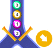
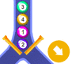

Ordna kulor
Uppgiften är att få kulorna i röret att till sist ligga som i modellen.
Varje omordning görs genom att klicka på knappen Vänd och sedan med pilarna välja i vilken ordning kulorna ska falla ner.
Du får göra högst vändningar.
Uppgiften är att få kulorna i röret att till sist ligga som i modellen.
Varje omordning görs genom att klicka på knappen Vänd och sedan med pilarna välja i vilken ordning kulorna ska falla ner.
Du får göra högst vändningar.


 
